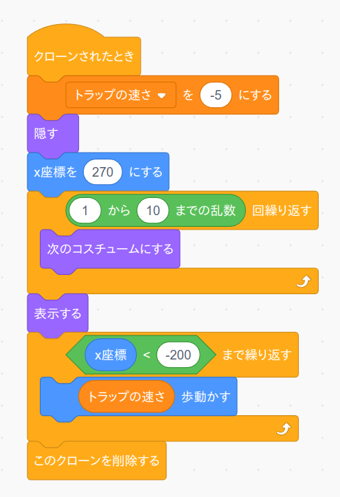

3. 動かす
次にトラップを画面の右から左に向かって動かすプログラムをつくります。
コード画面に戻り、まず変数「トラップの速さ」を作ります。
この変数でトラップが動く速さを調整できますので、後でバランス調整の時に使います。
そして次のプログラムを作成して下さい。
真中にある「1から10までの乱数」ブロックはコスチュームの数以上の数字にしてください。 するとコスチュームをランダムに切り替えるようになります。
また下の方にある「x座標 < -200 まで繰り返す」ブロックの数値でトラップを消す座標を決めています。 もし左端についても上手く消えない場合は数値を変えて下さい。
またこのままだとトラップが最初から画面に表示されたままになるので、非表示ボタンを押して画面から消して下さい。

以上が終わったら旗ボタンではなくて「自分自身のクローンを作る」ブロックを押して動作確認して下さい。